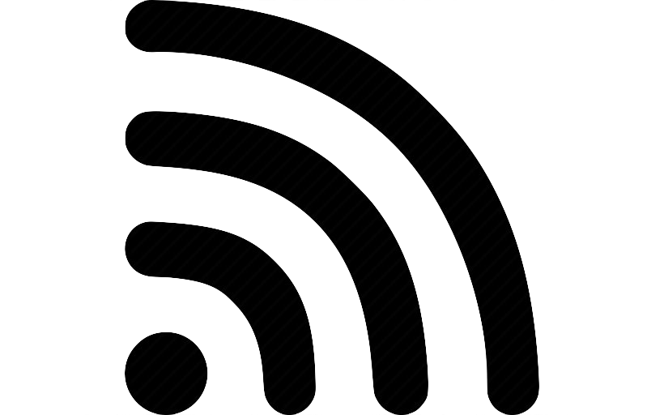

A propos de nous
Avec son type de retauration rapide, le Fast-Food de l'IUT vous propose une large gamme de produits de qualité.
La cafétéria du Crous a donc décidé de vous proposer la possibilité de commander des kebabs et de les consommer sur place ou à emporter. C'est donc sur ce site que tout se passe.
Nos services

Terrasse couverte
Wifi gratuit
Climatisation
A emporter
| Jour | Matin | Après-midi |
|---|---|---|
| Lundi | 10h-14h | 18h-20h |
| Mardi | 10h-14h | 18h-20h |
| Mercredi | 10h-14h | 18h-20h |
| Jeudi | 10h-14h | 18h-20h |
| Vendredi | 10h-13h30 | 18h-20h |
| Samedi | Fermé | |
| Dimanche | Fermé | |
|
Adresse : IUT - Feyssine, 69100 Villeurbanne Téléphone : 09.99.88.77.66 |
|
Nos Moyens de Paiements

Espèce ou monnaie
Carte bancaire
Ticket restaurant
Izly ou Carte étudiante